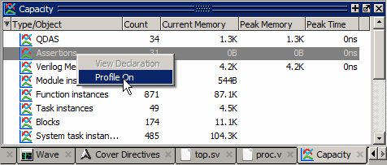

You can enable
the collection of fine grained memory usage data for assertions
and cover directives. This feature can be used to quickly identify
assertions and cover directives that consume the most memory and
also are performance intensive. It helps identify assertions and
cover directives that should be reviewed and rewritten in order
to reduce the number of threads for better performance.
Procedure
- Do either of the following:
Use the assertion profile on command. This command may be given at any time
during simulation.
The -threadthreshold argument
for the assertion profile command can be used to identify assertion/cover directive
threads that are exploding in memory. The correct syntax for the assertion profile command
is:
assertion profile [-threadthreshold <number_of_threads>] on|off
The assertion profile command
is independent of the -assertdebug argument
for the vsim command
(which stores assertion pass/fail data in the .wlf file),
so it can be used even if vsim was
not invoked with -assertdebug.
You can also enable profiling
in the Capacity window by right-clicking Assertions, Cover Directives,
or Covergroups and selecting Profile On from the popup menu (Figure 1).
Figure 1. Selecting Profile
On from Capacity Pane
- Select and to display memory
and performance profile data in the Assertions and Cover Directives
windows.
Three columns in the Assertions
and Cover Directives windows display this fine grained profile information:
Current Memory, Peak Memory, and Cumulative (number of threads).
Assertions that create the
most threads take the most time to simulate. Therefore, this information
is not only useful for memory profiling but also helps in performance profiling
as well. The cumulative number of threads can help in scenarios
where an assertion creates many short lived threads.
Examples
Threads
In the following assertion,
assert property (@(posedge clk) a |=> b);
if 'a' is true throughout the simulation,
the assertion will create a thread at every clock edge and the thread
will remain alive for exactly one clock cycle. This assertion may
not be one of the primary consumers of memory space but it will
produce a high cumulative thread count.
Thresholds
The simulator will generate a message
at every clock edge if the number of threads created by an assertion
or cover directive is more than the threshold. For example,
assert profile -threadthreshold 100
will write the following message
to the Transcript window as the simulation runs when the threshold
of 100 threads is crossed:
# ** Note: Assertion thread threshold reached. Thread count = 110, Memory = 4.8KB
# Time: 215 ns Scope: test.assert01 File: ./src/profile01.sv Line: 9
Note that this message is printed
at every clock edge when the thread threshold is crossed. So if
the threshold is too low, it will cause deluge of messages in the Transcript.